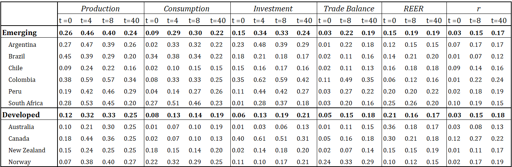

I suggest ....
The median (solid line) contribution of global shocks in each country group is plotted in figure \ref{fig:fevgs}, since them are based on bayesian simulation, the confidence sets display 68 percent of probability. In addition, I include the mean participation (x-marked line) as reference point about asymmetric behavior within the group. The left panel reports results for emerging markets while the right one for developed countries.
In the short run (instantaneous effect) we observe that global shocks have an explanation power higher for emerging markets in production explaining close to one quarter of its fluctuation while for developed economies this level is less than one half (12 percent). A similar comparison could be made in investment where these shocks drive around 15 percent of current fluctuations in developing countries and 6 percent in the other group. Both contribution paths exhibit a hump shape reflecting an slow adjustment natural and intuitive when we talk about underlying shocks in a market with price (or other) rigidities. For production, their maximum participation is reached after one year accounting for near 45 percent of domestic fluctuations in ECX, and 34 percent for advanced. In contrast, the adjustment costs make that investment raise during two years in the first group determining more than one third of its volatility, while in the case of developed economies it increases during the whole horizon. In the long run (after 40 quarters) fundamental shocks have accounted for almost one quarter of their predictability. Surprisingly, the long term explanation power are close in both samples.


In relation to consumption although in the long run global shocks have a share of 22 percent and 19 percent for ECXs and DCXs, respectively, their patterns evolves different. For the former, consumption is driven by 9 percent in the short run raising til arrive to 30 percent after 8 quarters; while for the later, this path starts with 8 percent and increases during the whole span.
The smaller participation of global shocks in real output fluctuations for developed markets are supported by the differences in transmission channels for each group of countries. In both groups a fundamental global shock explains close 3 percent of trade meaning that this channel is not a big source of divergence. Conversely, investment are less explained in developed economies (6 percent versus 15 percent) suggesting that financial integration of developed economies plays a role as transmission channel for global shocks. This is also visible after checking the short run explained portion of real exchange rate is higher and shows a decreasing pattern for developed economies, which implies a faster absorption of global shock in these markets. Furthermore, real interest rates display similar paths in both economies type (with a long run share near to 18 percent).
Contribution of Global Shocks to FEVHere compare the response in both cases and try to connect with structural things
I suggest ....
If you have any doubt, suggestions, or simply want to talk, you can contact with me.